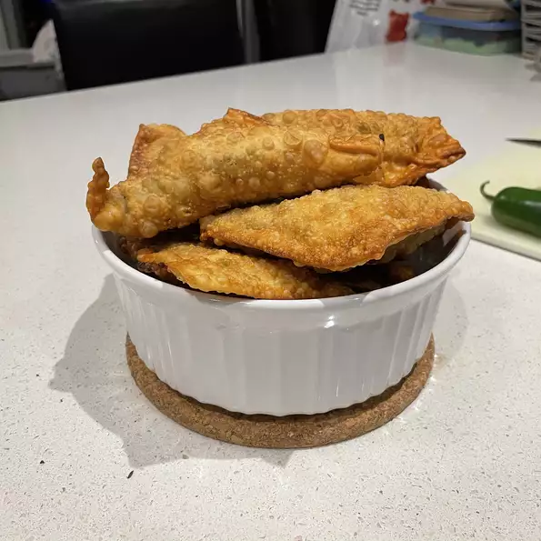

Return to home page
Samosa

Description (from Allrecipes.com) :
"Beef and potatoes are the main ingredients folded inside these wonderful deep fried samosas. Chicken livers may be substituted for beef, if you choose. My friend from Bangladesh gave me this savory, spicy recipe. You just can't buy better in the shops"
Ingredients :
- 2 large potatoes, peeled
- 1 cup frozen peas, thawed
- 2 tablespoons vegetable oil
- ½ teaspoon cumin seeds
- 1 bay leaf, crushed
- 2 large onions, finely chopped
- 1 pound ground beef
- 4 cloves garlic, crushed
- 1 tablespoon minced fresh ginger root
- ½ teaspoon ground black pepper
- 1 ½ teaspoons salt
- 1 teaspoon ground cumin
- 1 teaspoon ground coriander
- 1 teaspoon ground turmeric
- 1 teaspoon chili powder
- ½ teaspoon ground cinnamon
- ½ teaspoon ground cardamom
- 2 tablespoons chopped fresh cilantro
- 2 tablespoons chopped green chile peppers
- 1 quart oil for deep frying
- 1 (16 ounce) package phyllo dough
Steps :
- Bring a medium saucepan of lightly salted water to a boil. Stir in potatoes and peas. Cook until potatoes are tender but still firm, about 15 minutes. Drain, mash together and set aside.
- In a large saucepan over medium high heat, heat the oil. Brown cumin seeds and bay leaf. Mix in onions and ground beef. Cook until beef is evenly brown and onions are soft, about 5 minutes. Mix in garlic, fresh ginger root. Season with black pepper, salt, cumin, coriander, turmeric, chili powder, cinnamon and cardamom. Stir in the mashed potato mixture. Remove from heat and chill in the refrigerator for 1 hour, or until cool.
- Heat oil in a large, heavy saucepan over high heat.
- Mix cilantro and green chile peppers into the potato and beef mixture. Place approximately 1 tablespoon of the mixture onto each phyllo sheet. Fold sheets into triangles, pressing edges together with moistened fingers.
- In small batches, fry until golden brown, about 3 minutes. Drain on paper towels and serve warm.
Source : https://www.allrecipes.com/recipe/24871/beef-samosas/